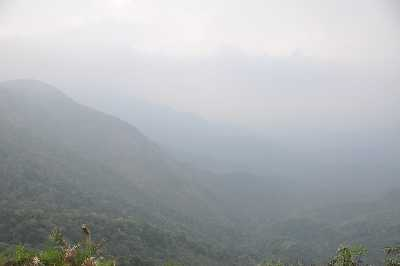
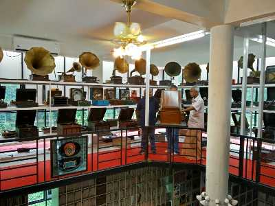
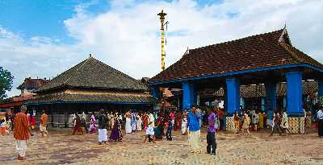

Kottathavalam

A fascinating cave carved out of rock surface is Kottathavalam lying on the top of a Murugan Hills at Kurisumala. The cave is considered to be the resting place for Madura Royal family.
The cave is adorned with various sculptures of Gods and Goddesses along with the sculptures of weapons used in the ancient times giving us a glance into the amazing past.
Kumarakom Bird Sanctuary

The Kumarakom Bird Sanctuary, also popularly known as the Vembanad Bird Sanctuary, is a breathtaking and beautiful bird sanctuary that is located at Kumarakom in the Kottayam district in the Indian state of Kerala. Situated on the banks of the Vembanad Lake in the Kerala Backwaters, this bird sanctuary is a favourite destination for many native as well as migratory birds, which makes the place a dreamland full of ecstasy and delight for bird watchers and nature lovers. The houseboats and motor boats that are available on rent to watch birds further enhance this enrichening experience. A trip to the Kumarakom Bird Sanctuary is thus a must while in Kerala, to explore and unravel the hidden treasures and gifts of the Earth.
Ettumanoor Mahadeva Temple

Located at a distance of about 10 kms from Kottayam in Kumarakom, Ettumanoor Mahadeva Temple is a revered holy place of the Hindus. Considered to be the oldest temple in the state of Kerala, the temple is believed to have been a common site of worship by the Pandavas and Sage Vyasa in the ancient days. Dedicated to Lord Shiva, the shrine is popular for its spectacular murals, beautiful frescos and excellent wood carvings made in the 16th century, which are borrowed from the classic epics of Ramayana, Mahabharata and Puranas. The age-old lamp at the entrance of the temple is fed with oil by devotees every day; it was believed to have been lighted 450 years ago and has been burning ever since.
Thangal Hill

Popular for its cascading waterfalls, blue mountains, meandering rivers, clear waters and misty environment, Vagamon is a quaint little hilltown bordering the districts of Kottayam and Idukki. Three mighty hills known as Thangal, Murugan and Kurisumala form the essence of the town. Colloquially known as Thangal Para, Thangal Hills are an important pilgrimage spot of the Muslims, located barely 5 kms from Vagamon. The whopping boulder at the top of the hill houses the mausoleum of Sheikh Fariduddin (mazaar/ dargaah of Sheikh Fariduddin) and is visited by thousands of Muslim pilgrims annually during the festival of Urs. Just below the rock boulder at the bottom of the hill, is a mosque used by the devotees and the locals to offer their prayers.
Gramophone Museum

Located at an hour’s drive from Kottayam, Sunny’s Gramophone Museum also known as Discs & Machines, is a unique private venture which is one of its kind in the country. Opened to public on the 25th of January, 2015, the two floored depository is a storehouse of over 1 lac rare records and about 260 gramophones, phonographs and record players. Established as a result of passion and avidity of Mr. Sunny Mathew - a retired officer of Kerala Forest Department, the private enterprise is a treasure trove of vintage cars, vinyl records, gramophones, valve radios, tape recorders, olden day telephones, sewing machines etc. of the bygone era in the last 3 decades.
Chottanikkara Temple

Located around 50 kms from the town of Kottayam near Ernakulam, Chottanikkara is the most revered of the 393 Hindu shrines spread across 3 districts in the state of Kerala. Popular for its spectacular architecture, the shrine stands out to be the ultimate testimonial for the primordial vishwakarma sthapathis (wooden sculpture) in carving out this temple. Sree Mahamaya Bhagawati (Aadiparashakthi), believed to be the supreme mother Goddess in Hindu religion, also known as the Goddess of Power presides the temple. Popularly known as Chottanikkara Devi, the Goddess is worshipped in three forms at three different times of the day. In the morning, she is worshipped as Maha Saraswati (Mother of Knowledge), decked in white; in the afternoon, she is worshipped as Maha Lakshmi (Mother of Wealth), clad in crimson; and in the evening, she is worshipped as Sree Durga (Mother of Power), draped in blue.